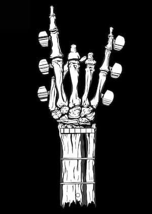

Čo je Rock?
Rock je hudobný žáner, ktorý vznikol v 50. rokoch 20. storočia v Spojených štátoch. Jeho základ tvorí elektrická gitara, basgitara a bicie, často doplnené spevom a klávesmi. Rock sa vyznačuje výrazným rytmom, energiou a priamočiarymi textami, ktoré sa dotýkajú lásky, slobody, vzbury či každodenného života. Vyvinul sa z rhythm and blues, country a gospelu.
Postupom času sa rock rozvetvil do mnohých podžánrov, ako sú hard rock, punk, heavy metal, alternatívny rock či progresívny rock. Medzi najvýznamnejšie kapely patria The Beatles, Led Zeppelin, Black Sabbath, Queen alebo AC/DC, ktoré ovplyvnili celé generácie hudobníkov. Black Sabbath pritom stoja na začiatku heavy metalu, ktorý sa z hard rocku vyvinul práve na začiatku 70. rokov. Rock nie je len hudba, ale aj životný štýl a kultúra, ktorá formovala módu, postoje a spôsob, akým mladí ľudia vyjadrujú svoje názory.
Najznámejšie podžánre Rocku
- Rock and Roll
- Blues Rock
- Folk Rock
- Progresívny Rock
- Heavy Metal
- Punk Rock
- Grunge
- Alternatívny Rock
- Indie Rock
Typické nástroje v Rocku
- Elektrická gitara
- Basgitara
- Bicie
- Klávesy
- Spev

| Obdobie | Podžáner | Typický predstaviteľ |
|---|---|---|
| 50. roky | Rock and Roll | Elvis Presley |
| Rockabilly | Chuck Berry | |
| 60. roky | Blues Rock | The Rolling Stones |
| 70. roky | Hard Rock | Led Zeppelin |
| Heavy Metal | Black Sabbath | |
| Shock Rock | Alice Cooper | |
| Progresívny Rock | Pink Floyd | |
| Hard Rock | Kiss | |
| Rock and Roll | AC/DC | |
| 70. až 80. roky | Blues Rock | Aerosmith |
| Arénový Rock | Queen | |
| 80. roky | Sleaze Rock | Guns N' Roses |
| Glam Metal | Bon Jovi | |
| Tabuľka je orientačná, veľa žánrov vznikalo súbežne. | ||